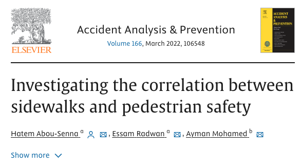
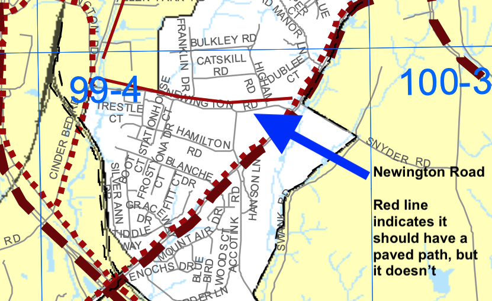

Yes, there are several schools very close to Newington Road that residents and their kids cannot safely access without a sidewalk including Red Wagon Learning Center, Northern Virginia Academy of Early Learning, and Island Creek Elementary School.
The lack of a sidewalk creates more traffic congestion in the community and at schools. When parents are forced to drive kids to schools, it causes traffic problems around schools and, according to Fairfax County Public Schools, makes it "more difficult for student walkers and bicyclists to get to school."
Currently, Newington Road is so dangerous for pedestrians that it is "nearly impossible" to reach the local schools without using a car. With a sidewalk, it would be a 16 minute walk.
Yes, Levelle Dupell Park is a Fairfax County Park located less than 0.25 mile away but instead of a 3 minute walk to the park, residents have to drive a car to get there because there is no sidewalk to get there.
Currently, Newington Road is so dangerous for pedestrians that it is "nearly impossible" to reach Levelle Dupell Park without using a car. With a sidewalk, it would be a 3 minute walk.
Yes, Landsdowne Centre and Hilltop Village are less than a mile away and have more than 45 destinations including day cares, grocery stores, pharamacies, doctor offices, cafes, dentists, restaurants, and more. Residents cannot safely walk to any of these places because there is no sidewalk. Fairfax County's Kingstowne Center for Active Adults and Kingstowne Library also are less than a mile away but residents cannot safely walk to them because there is no sidewalk.
Kingstowne Center for Active Adults is a Fairfax County community activity center that offers programs and services for older adults in the area. Although it is less than a mile away, older adults on and around Newington Road cannot access this center without driving their car. Kingstowne Library is a Fairfax County public library with educational events, kids' programs, and community services. Although it is less than a mile away, residents and their families cannot get to the library without driving their car.
Currently, Newington Road is so dangerous for pedestrians that it is "nearly impossible" to reach the Kingstowne Center for Older Adults and Kingstowne Library without using a car. With a sidewalk, it would be a 16 minute walk.
Yes, at the end of Newington Road, there is a Fairfax County Connector bus stop for the 334 bus. This bus helps residents safely travel without a car and goes to Franconia-Springfield Metro station.
Currently, Newington Road is so dangerous for pedestrians that it is "nearly impossible" to reach this bus stop without using a car. With a sidewalk, it would be a 5 minute walk.
Yes, the Newington United States Post Office is located a mile from Newington Road at 8253a Backlick Rd but residents cannot safely walk there because there is no sidewalk.
Currently, Newington Road is so dangerous for pedestrians that it is "nearly impossible" to reach the post office without using a car. With a sidewalk, it would be a 24 minute walk.
Yes, scientists have found that pedestrians are three times more likely to be hit on a road with no sidewalk. (Abou-Senna et al. 2022)
No, it is lined with single family residential development at suburban density levels.
It directly aligns Fairfax County's Active Transportation Program which is meant to provide "safe access for pedestrians, especially near schools, parks, activity centers, and transit station areas."
A sidewalk on Newington Road would provide safe access to schools (Island Creek Elementary, Northern Virginia Academy, Red Wagon Learning Center), parks (Levelle Dupell Park), activity centers (Fairfax County Kingstowne Center for Older Adults, Kingstowne Library, Landsdowne Shopping Center), transit station areas (334 Fairfax Connector Bus Line, Springfield-Franconia Metro Station).
Increase safety: Newington Road is extremely dangerous for pedestrians, seniors, children, dog walkers, joggers, and anyone not traveling in a car. Adding a sidewalk will enable residents to have a safe way to travel in their community, to parks, to schools, to public transit, and to activity centers. Currently, residents cannot safely get to these places without driving a car even though most of them are less than a mile away.
Reduce traffic: Residents in the Newington Road community are forced to drive places that are less than a mile away: they have to drive to their local park, drive to the local library, drive to the bus stop down the road, drive to their neighbors house to visit them, drive to activity centers to learn and socialize, drive to schools and daycares, drive to the pharmacy, drive to the grocery store, drive to restaurants. All of this driving contributes to very bad traffic congestion in the area. With a sidewalk, residents could walk to all of these places.
Decrease emissions and pollution: If residents did not have to drive their cars to the park, schools, library, grocery store, and more, emissions and pollution would decrease. This is more sustainable and would contribute to better air quality.
Improve health: Residents around Newington Road cannot safely walk without a sidewalk and must use a car for nearly every purpose instead of walking. This lack of physical activity has negative consequences for people's health. Fairfax County states: "Physical inactivity is a major contributor to the steady rise in rates of obesity, diabetes, heart disease, stroke, and other chronic health conditions in the United States."
Yes, the following local businesses have signed on in support of a sidewalk on Newington Road:
Bella Ballerina Kingstowne
Chalkboard Wings & BBQ Restaurant
Chi Mc Chicken Restaurant
CMAA Capitol Martial Arts Academy
Coffee In
CVS (Landsdowne)
Dairy Queen (Landsdowne)
Donna Nails and Spa
Fair Winds Brewing Company
Gunston Deli and Grill
Kumon Math and Reading Center
Mission BBQ
Northern Virginia Learning Academy
Olympians Family Restaurant
The Pate Wagon
Pho Bowl
Puzukan Korean BBQ
StarFit Studio
The Burger Shack
Tropical Smoothie Cafe
Wagon Wheel
Woof Gang Bakery
Yes it is. The stretch of Newington Road in question is included in the Fairfax Countywide Trails Plan Map and should have a "Minor Paved Trail" for pedestrians and bicyclists. The County has not built this.
Yes, Fairfax County has approved $100 million for "investments in pedestrian and bicycle infrastructure that will have long-term, meaningful impacts on accessibility, and safety in the community."
The funding is to provide "safe access for pedestrians, especially near schools, parks, activity centers, and transit station areas." A sidewalk on Newington Road would provide safe access to schools (Island Creek Elementary, Northern Virginia Academy, Red Wagon Learning Center), parks (Levelle Dupell Park), activity centers (Fairfax County Kingstowne Center for Active Adults), transit station areas (334 Fairfax Connector Bus Line, Springfield-Franconia Metro Station).
Yes, this 0.4 mile segment of Newington Road that does not have a sidewalk is a "missing link" or "gap" between existing sidewalks on Cinderbed Road and Telegraph Road. Fairfax County has stated that this gap with no sidewalk creates "an extremely dangerous situation for bicyclists and pedestrians along this segment."
"I love to go for walks in parks, but I can't walk past my driveway becasue Newington Road is too dangerous. It's sad but I get in my car and drive somewhere else so I can safely walk." - 30 year resident on Newington Road
"Our mailbox has been hit by cars five times. I never let my kids near Newington Road and drive them to school and the library which are just down the road because there is no sidewalk." - 16 year resident on Newington Road
"I wish I could let my 15 year old soon walk to the library or grocery store, but he can't because there is no sidewalk. I will not let him walk anywhere near Newington Road." - 8 year resident on Higham Rd off of Newington Road
| Newington Road without a sidewalk | Newington Road with a sidewalk | |
|---|---|---|
| Pedestrian safety | Not safe. | Safe. |
| Access to schools | None. Must drive a car. | Can walk, bike, or drive to schools |
| Access to parks | None. Must drive a car. | Can walk, bike, or drive to parks |
| Access to community centers | None. Must drive a car. | Can walk, bike, or drive to centers |
| Access to public transit | None. Must drive a car. | Can walk, bike, or drive to transit options |
| Multi-modal travel options | None. Must drive a car. | Can walk, bike, or drive to travel |
| Non-vehicle mobility options for pedestrians | None. | Can walk or bike. |
| Non-vehicle mobility options for children | None. | Can walk, bike, or ride in wagon or stroller. |
| Non-vehicle mobility options for seniors | None. | Can walk or bike. |
| Non-vehicle mobility options for disabled individuals | None. | Can walk, bike, or use wheelchair. |
| Effect on traffic congestion | Increases traffic congestion. | Reduces traffic congestion. |
| Effect on the environment | Harms environment. | Helps environment. |
| Likelihood of pedestrian injury or fatality | High. | Low. |
| Time to walk to: | Newington Road without a sidewalk | Newington Road with a sidewalk |
|---|---|---|
| Time to walk to Levelle Dupell Park | "nearly impossible" | 3 minutes |
| Time to walk to Fairfax Connector 334 bus stop | "nearly impossible" | 5 minutes |
| Time to walk to a neighbor five houses down | "nearly impossible" | 6 minutes |
| Time to walk to Kingstowne Center for Active Adults | "nearly impossible" | 17 minutes |
| Time to walk to Kingstowne Library | "nearly impossible" | 17 minutes |
| Time to walk to Red Wagon Learning Center | "nearly impossible" | 18 minutes |
| Time to walk to Kumon Math and Reading Center | "nearly impossible" | 18 minutes |
| Time to walk to Landsdowne Family Denstist | "nearly impossible" | 18 minutes |
| Time to walk to CVS Pharmacy | "nearly impossible" | 19 minutes |
| Time to walk to United States Post Office | "nearly impossible" | 24 minutes |
| Time to walk to Wegmans Supermarket | "nearly impossible" | 25 minutes |
Yes, the plan for a sidewalk on Newington Road has been endorsed by The Fairfax Alliance for Better Bicycling (FABB), the Mount-Vernon Chamber of Commerce, the South Fairfax Chamber of Commerce, and the Central Fairfax Chamber of Commerce.
Yes, the plan for a sidewalk on Newington Road has been endorsed by Fairfax County Mount Vernon Supervisor Daniel Storck, Virigina Delegate Kathy Tran, Virginia Delegate Mark Sickles, and Virginia Senator Scott Surovell.
You can help by emailing and calling Fairfax County and telling them you support safety and a sidewalk on Newington Road using the links below.